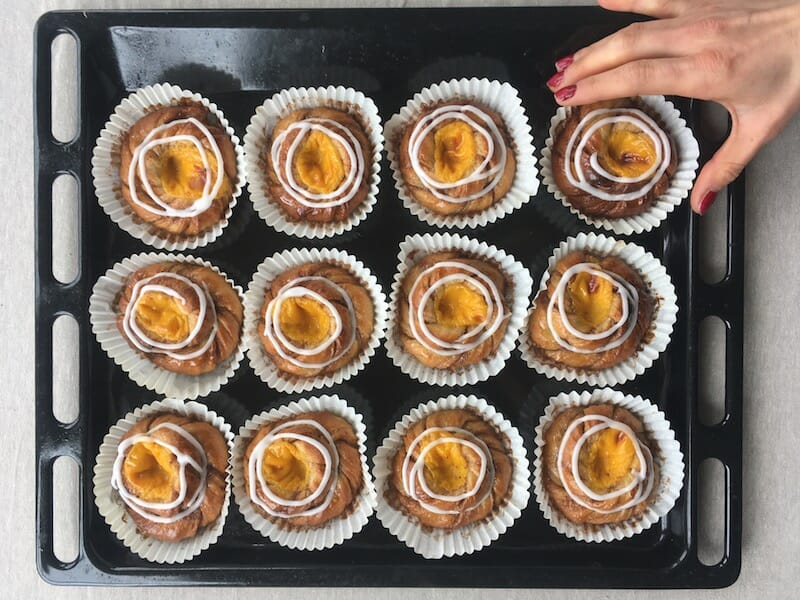

Go Back
Recipe: Solskinnsboller

Posted by Scandinavian Kitchen
Solskinnsboller - Norwegian Custard Cinnamon Swirls
Of all the things to come out of Norway (brown cheese, knitted jumpers, a dabbing prince), these 'Solskinnsboller' buns must be amongst the tastiest. Don't need another bun recipe? Listen. We think you do. These are named sunshine buns because they have the same effect - they make you happy. Buttery, soft cinnamon swirls with a gooey vanilla custard centre. Cinnamon buns = good. Custard = good. These buns? Criminal.
Ingredients
- 1 quantity of bun dough
- 1 quantity of creme patisserie or thick custard (homemade or bought - but if the latter thicken it with a bit of cornflour first or it will be too runny.
Quick and easy vanilla custard cream
- 2 egg yolks
- 1 tbsp corn flour
- 3 tbsp caster sugar
- 2 tsp vanilla sugar or 1 tsp vanilla paste
- 200 ml whole milk
Instructions
- In a medium size saucepan, heat the milk until steaming (do not let it boil). Remove from heat. In a bowl, whisk together egg yolks, corn flour, sugar and vanilla until a thick paste. Whilst whisking, pour a little of the hot milk into the egg/sugar mixture until combined. Continue adding the hot milk slowly until everything is combined. Return to the saucepan and let simmer over medium heat until thickened - whisk continuously to avoid lumps forming. Once thickened (you should be able to make soft blobs that don't disappear immediately - it will thicken more when it cools) pour into a bowl and place clingfilm directly onto the top of the custard. This avoids a skin forming. Leave to cool completely - the fridge quickens this step.
Assembling the buns:
- Make you cinnamon buns as normal and leave under a tea towel for 25-30 mins to rise a bit more. Place your creme patisserie in a piping bag or plastic bag.
- Now, you need to make an indent in each bun to fit the creme pat in - press down in the middle with your finger (or something measuring about 2cm diameter) until you have even indents in every bun. Pipe a small amount of custard into each hollow. Don't be tempted to use too much - it will just get messy (but still tasty). 1-2 tsp should be enough.
- Bake at 220 degrees celsius for 10-15 minutes or until golden brown.